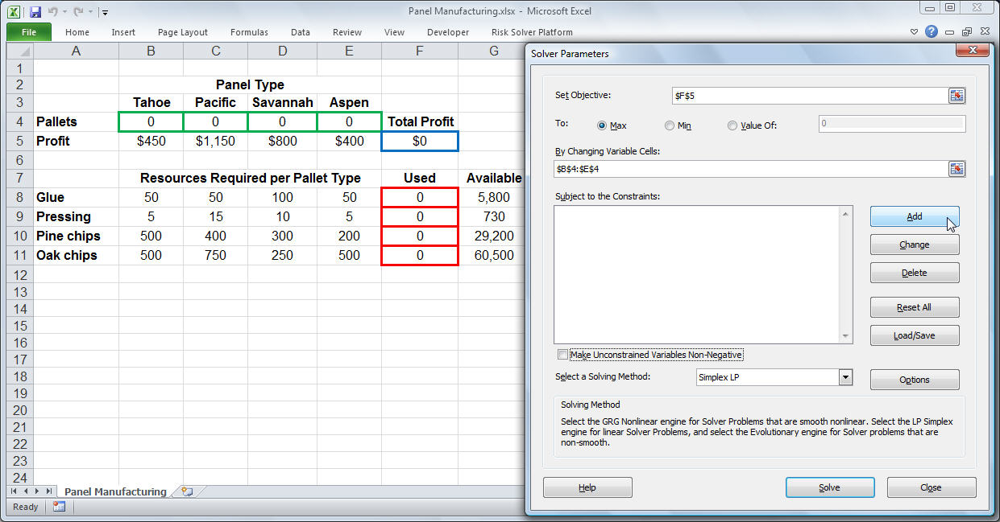

Ore blend Optimizer
For this project I was able to find a way to make a process more efficient. Normally it took us about three to four hours to run the simulations for a month of production. With the tool developed in Excel, we were able to have it in less than an hour.
This optimizer included the constraints, the materials to be fed. It helped us to consider many variables to focus on feeding what helps to optimize production.
The macros were developed in Visual Basic